Собираем. Сортируем. Группируем.
Памятка по обращению с отходами
10 простых привычек на каждый день
Экотехнопарк Липецкого района
ООО «СтройСельхозГарант»
ekotechnopark.vercel.app
ООО «СтройСельхозГарант»
ekotechnopark.vercel.app
Несколько простых действий дома помогают лучше подготовить содержимое контейнера к дальнейшей сортировке, а некоторым материалам — стать ресурсом.
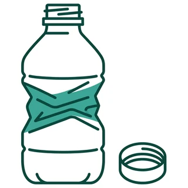
01
Открути крышку. Сомни бутылку.Перед тем как выбросить пластиковую бутылку, сними крышку и сомни её. Так она занимает меньше места и лучше проходит сортировку.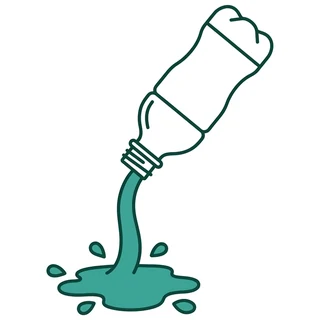
02
Сначала вылейНе оставляй внутри воду, молоко, масло или другую жидкость. Остатки могут загрязнить материалы, которые ещё можно отобрать для переработки.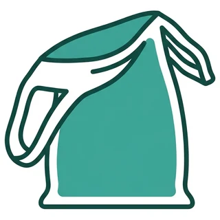
03
Пакет не завязывайОставь пакет открытым. Так его содержимое проще освободить на сортировочной линии.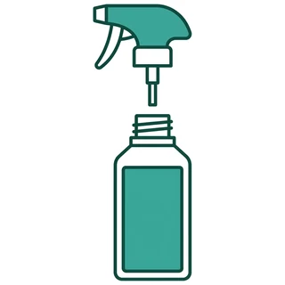
04
Пульверизатор отдельноСними распылитель с флакона. Они из разных материалов, и разделить их лучше заранее.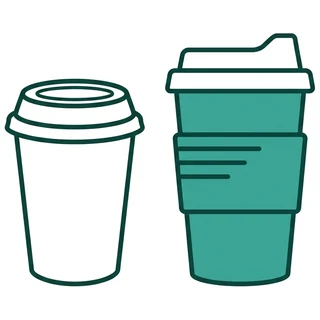
05
Стаканчик не в макулатуруВнутри есть защитное покрытие, поэтому вместе с обычной макулатурой его не перерабатывают. На каждый день лучше многоразовая кружка.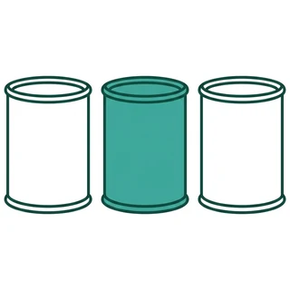
06
Банки без отдельного пакетаНе заворачивай консервные банки в пакет. Так их проще заметить и отобрать на линии.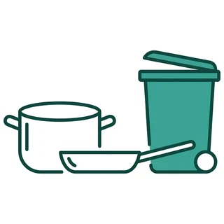
07
Кастрюли и сковородки в обычный контейнерСтарую кастрюлю или сковородку можно отправить в обычный контейнер вместе с другими отходами.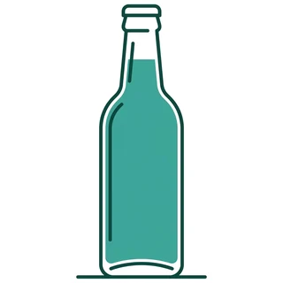
08
Стекло оставь целымНе разбивай стеклянные бутылки специально. Целое стекло безопаснее для сотрудников сортировочной линии.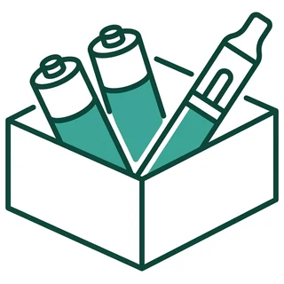
09
Батарейки, аккумуляторы и вейпы отдельноУстройства с элементами питания нельзя отправлять в обычный контейнер. Для них нужны специальные пункты приёма.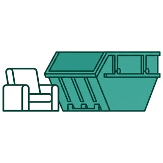
10
Крупным вещам — отдельный бункерСтарую мебель и другие крупные предметы отправляй в контейнер для крупногабаритных отходов, а не в обычный бак.Не всё можно выбросить в обычный контейнер
- Шины
- Ветки
- Строительные отходы
- Батарейки и аккумуляторы
- Вейпы и электронные сигареты
- Крупногабаритные отходы
Технику можно выбросить в общий бак ТКО, если вынуть батарейки и аккумуляторы и сдать их отдельно.
Простые привычки складываются в большой результат
То, как мы обращаемся с отходами дома, влияет на всю систему дальше. Чем меньше загрязнённых и неподходящих отходов попадает в общий поток, тем больше полезных материалов можно сохранить и тем меньше нагрузка на окружающую среду.
Гав! Один пакет я за тебя не соберу. А вот десять правил уже подсказал. Осталось только запомнить.
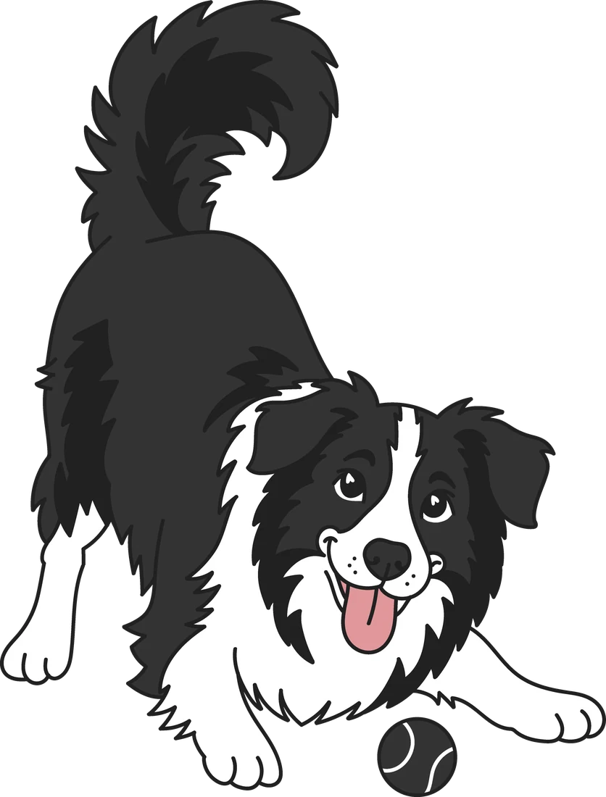
ССГ · Экотехнопарк Липецкого района
Собираем. Сортируем. Группируем.